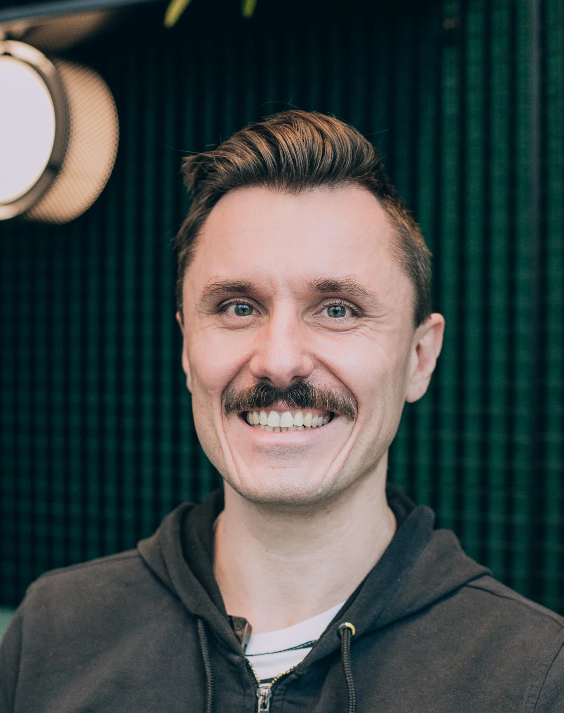

A philosopher‑engineer's practice
for serious artificial intelligence.
Dr. Mark Wernsdorfer advises research institutes, hospitals, and small and medium enterprises on machine-learning systems where the theoretical stakes are as consequential as the technical ones — from clinical decision support to disinformation detection.
- Areas
- Machine Learning · Clinical Decision Support · Digital Literacy
- Languages
- Deutsch · English · Français
- Mode
- Remote & On-site, Europe
- Availability
- 2026 Q2 onward
The practice at a glance.
- 15yr Research → practice Working between foundational research and deployed systems since 2011.
- €3M+ Funding secured Competitive grants & programme budgets across clinical and public-sector work.
- 40+ Countries reached Bina School adaptive-learning deployment spans international cohorts, ages 4 – 12.
- 8× Institutional partners Fraunhofer, UKL Leipzig, BMBF, Media Lab Bayern, FAU, Staatskanzlei, Bina, LJKE.
Selected institutions, 2014 — 2026.
- Fraunhofer Institute
- Public researchGermany
- Universitätsklinikum Leipzig
- University hospitalLeipzig, DE
- BMBF · Prototype Fund
- Federal research programmeBonn, DE
- Media Lab Bayern
- Journalism innovation labMunich, DE
- FAU Erlangen-Nürnberg
- Research universityErlangen, DE
- Bayerische Staatskanzlei
- State chancelleryMunich, DE
- The Bina School
- Accredited online schoolInt'l · 40+ countries
- LJKE Bayern
- Educational mediaMunich, DE
Four categories of engagement.
| Ref. | Engagement | Duration | Deliverable | Format |
|---|---|---|---|---|
| SVC.01 |
Strategic AI Advisory
Readiness assessment, roadmap, and ethical governance for organisations navigating the AI landscape with intent. |
4 — 16 weeks | Written report & roadmap | Remote or on-site |
| SVC.02 |
Research → Production Translation
Commercialising academic work into shipped systems. Proof of concept, prototypes, grants. €2.8M+ secured. |
3 — 18 months | Working prototype, grant application | Embedded team |
| SVC.03 |
Domain-Specific AI Solutions
Healthcare, laboratory medicine, geosciences, cultural heritage. Where generic toolkits fail, domain models deliver. |
6 — 24 months | Deployed system | Custom, per domain |
| SVC.04 |
Responsible AI Implementation
Explainability, bias, privacy. Stakeholder engagement. Implementation that can be defended, not just demoed. |
8 — 20 weeks | Governance framework & audit | Workshop + written |
Five representative projects, 2011 — 2025.
-
ENG.2023.DC
DoppelCheck
Browser-based machine-learning tool for real-time identification of disinformation with privacy-first local processing.
- Period
- 2023 — 24
- Role
- Project Lead & Sole Developer
- Support
- Media Lab Bayern · WPK Innovation Fund
- Honour
- Award Finalist, 2024
- Class
- Tool · Digital literacy · Open source
-
ENG.2019.AMP
AMPEL
Clinical decision support system for real-time laboratory diagnostics, deployed across 1,500+ hospital beds at University Hospital Leipzig.
- Period
- 2019 — 21
- Role
- Key AI Architect
- Institution
- Universitätsklinikum Leipzig
- Funding
- €3M+ project scale
- Class
- Medical AI · CDSS · Real-time ML
-
ENG.2025.BIN
The Bina School
Lead AI developer for a Cognia-accredited online school reaching ages 4 – 12 across 40+ countries. Adaptive learning paths, personalised curricula.
- Period
- 2025
- Role
- Lead AI Developer
- Reach
- 40+ Countries
- Scope
- Data-driven personalisation
- Class
- EdTech · Adaptive learning · Global scale
-
ENG.2023.ART
ARTeFact (Spiegelbox)
Interactive AI installation exhibited at Globe Theatre Leipzig, examining the ethical dimensions of AI empathy exploitation.
- Period
- 2023
- Role
- Sole Developer & Designer
- Venue
- Globe Theatre, Leipzig
- Focus
- AI & human experience
- Class
- AI ethics · Installation · HCI
-
ENG.2011.SG
Symbol Grounding
Foundational doctoral research on how artificial systems develop conceptual understanding. Dissertation and award-winning publication, 11th AGI Conference.
- Period
- 2011 — 19
- Role
- Principal Investigator
- Institution
- University of Bamberg
- Honour
- Springer Best Paper, AGI 2018
- Class
- PhD research · Cognitive science · Phil. of mind
Extracted from letters of reference.
For the most difficult problems he found very effective solutions — and implemented them, at all times, in practice.
The complete reference set.
-
[1]
For the most difficult problems he found very effective solutions, which he successfully implemented in practice at all times, thus always achieving excellent work results.
Isermann, B. Prof. Dr., Institute Director · University of Leipzig
-
[2]
Outstanding and highly in-depth specialised knowledge. Exceptionally analytical thinking and very rapid comprehension. An extremely loyal colleague who integrated very well into the team.
Radic, M. Dr., Department Head · Fraunhofer IMW
-
[3]
Thanks to his positive attitude, he contributed significantly to excellent teamwork at all times. He knew how to convince through his cooperative, confident, and accommodating manner.
Steuer-Flieser, D. Dr., Chancellor · Universität Bamberg
-
[4]
Dedicated himself to difficult tasks with great enthusiasm and always found customer-oriented and goal-oriented solutions. Thanks to his quick comprehension, he easily grasped complex interrelations.
Lauer, M. Managing Partner · Orpheus GmbH
Biography & working approach.

The practice combines Artificial Intelligence, Machine Learning, Philosophy of Mind, and Cognitive Science in a single working body — a rare combination that allows theoretical problems and engineering problems to be addressed together, not serially.
Work moves between two poles: foundational inquiry into how artificial systems represent meaning (symbol grounding, consciousness, phenomenology of computation) and the concrete construction of machine-learning systems in environments where correctness matters — clinical laboratories, editorial newsrooms, classroom software. The result is advice and implementation that can be defended technically, philosophically, and operationally.
The practice is based in Berlin. Multilingual in German, English, and French. Available for remote and on-site engagements across Europe.
Have a difficult problem
worth thinking carefully about?
Initial consultations are free, 90-minute conversations — an opportunity to describe the problem in detail and establish whether the practice is the right fit. Written follow-up is provided; further engagement is by mutual agreement.